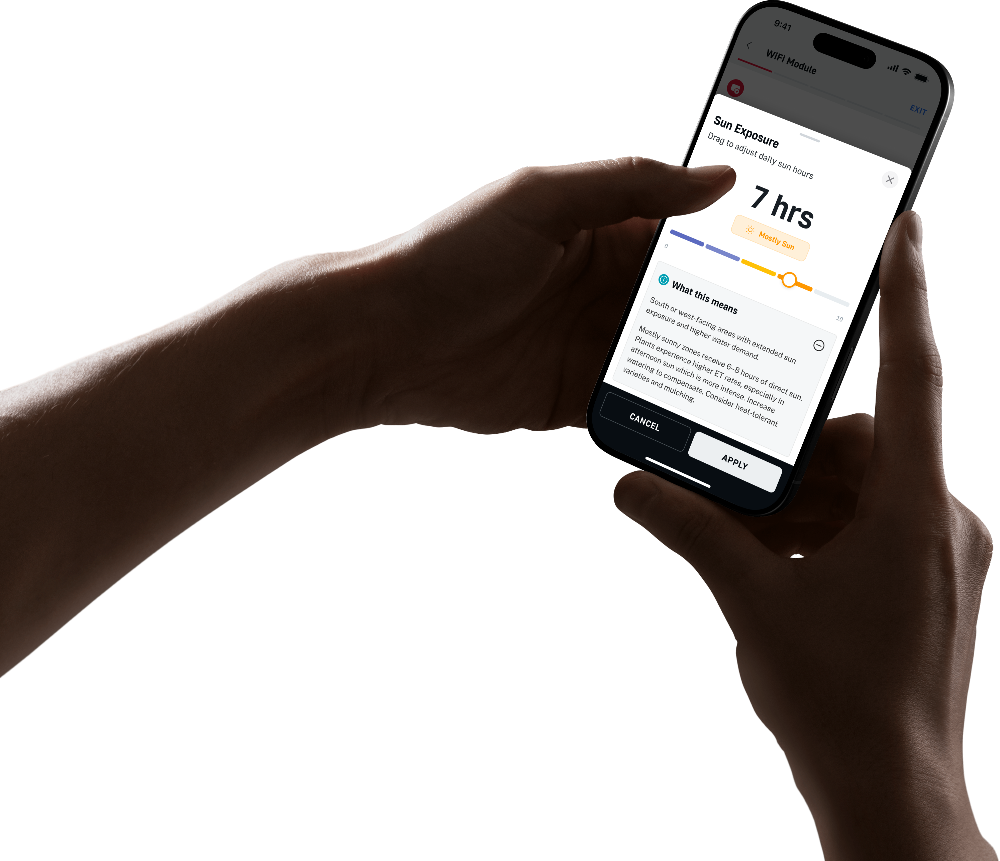

Precision ET
Translating weather and irrigation science into a decision-support product people can trust.

Science is only valuable when it becomes an actionable decision.
Precision ET works from complex environmental inputs and FAO-56 science. The design challenge was to show enough reasoning to build trust without turning every user into a hydrologist.
Start with the work, not the interface.
I focused on the gap between model output and user action: what people need to know, what can remain behind the scenes, and where a recommendation needs explanation.
Recommendations need a clear next step.
The interface must connect evidence, confidence, and action.
Trust is a product behaviour.
Observation, stakeholder alignment, and prototype feedback kept the work grounded in real constraints.
Turn complexity into a usable point of view.
We defined a product language for inputs, confidence, exceptions, and outcomes so users could act without losing visibility into the system.
Understand people, constraints, hardware, data, and context.
Make the problem and decision model legible to the team.
Prototype flows, states, and edge cases across surfaces.
Test, refine, and create reusable patterns that last.
Make the invisible model legible.
The experience turns environmental complexity into a usable scheduling decision while preserving the ability to inspect and adjust.

Product framing keeps the science visible enough to trust and simple enough to use.
AI that supports judgement.
The system augments professional decision-making rather than hiding it behind a single opaque answer.
Better decisions through clearer evidence.
The product makes a complex model easier to understand, question, and use.
Patterns over one-off screens.
Reusable interaction and content structures create leverage across the wider product ecosystem.
More work across the system.
See the rest of the portfolio, or get in touch about a complex product problem.
Back to selected work